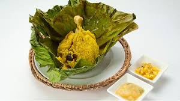
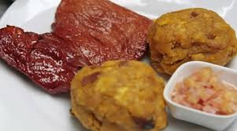
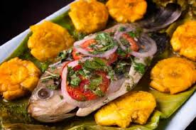

El juane es un plato emblemático de la selva peruana. Se prepara con arroz sazonado, carne de pollo, huevo y aceituna, todo envuelto en hojas de bijao.
El tacacho se prepara con plátano verde asado y machacado, acompañado de cecina (carne de cerdo salada y seca) y chorizo amazónico.
Pescado amazónico cocinado envuelto en hojas de bijao con hierbas y especias típicas de la selva, asado a las brasas o a la parrilla.
